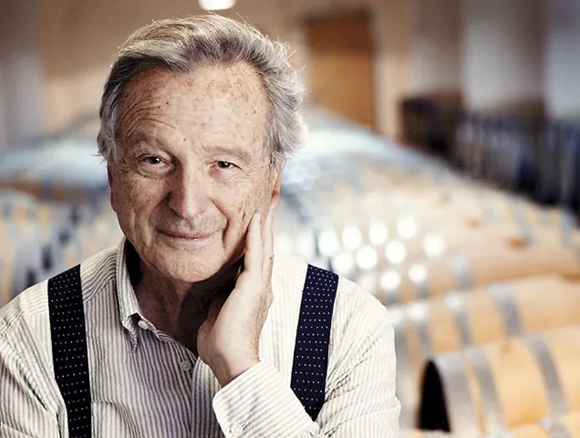

Rafael Moneo, la créativité en personne

Rafael Moneo est un célèbre architecte espagnol et lauréat du prix Pritzker 1996. Il est une figure emblématique de l'architecture contemporaine. Né en 1937 à Tudela, en Espagne, Moneo a été largement salué pour sa capacité à mélanger tradition et modernité dans ses créations architecturales. Ses conceptions se distinguent par une profonde réflexion contextuelle, s'adaptant harmonieusement à l'environnement urbain et aux paysages culturels. Moneo a développé un style qui transcende les époques, mettant en valeur l'histoire et la culture de chaque lieu qu'il façonne.
Ses œuvres célèbres incarnent cette vision unique, comme le Musée Extension du Prado à Madrid, où il a réussi à mélanger l'ancien et le nouveau, en respectant l'identité historique tout en introduisant l'esthétique contemporaine. La cathédrale de Los Angeles, également conçue par Moneo, démontre avec brio sa capacité à créer des espaces sacrés empreints de spiritualité et de modernité.

Un héritage moderne
En tant qu'éducateur et enseignant, Moneo a également partagé sa passion pour l'architecture avec de nombreuses générations d'étudiants. Ses contributions à la théorie architecturale et sa vision pédagogique ont laissé une marque durable dans le domaine de l’architecture. L’héritage de Rafael Moneo réside dans sa capacité à fusionner l’ancien et le moderne, en créant des espaces intemporels qui dialoguent avec leur environnement et transcendent les frontières du temps grâce à la beauté de leur fonctionnalité. Ses réalisations continuent d'inspirer et de marquer l'histoire de l'architecture